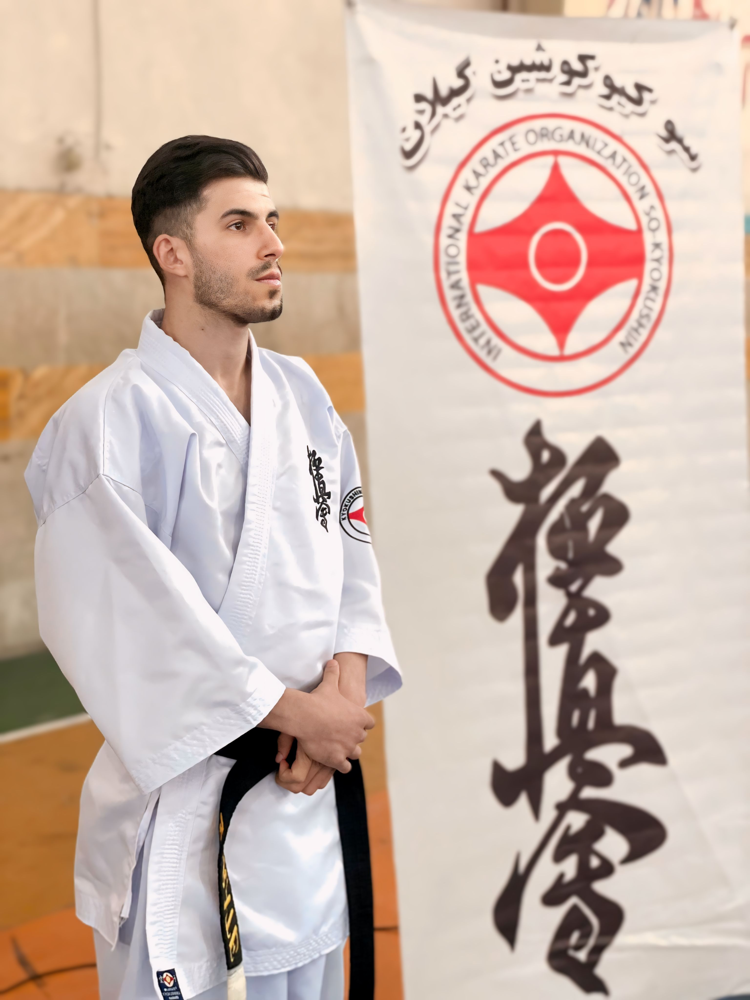
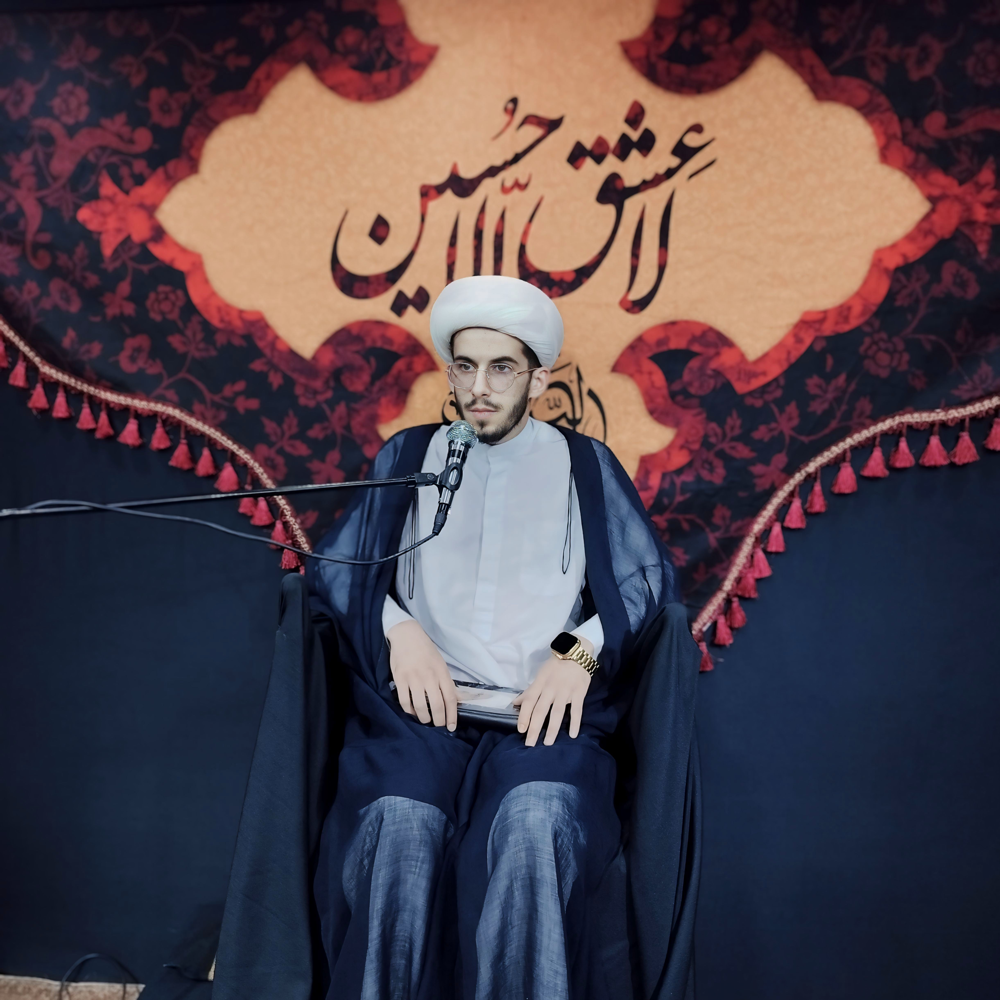
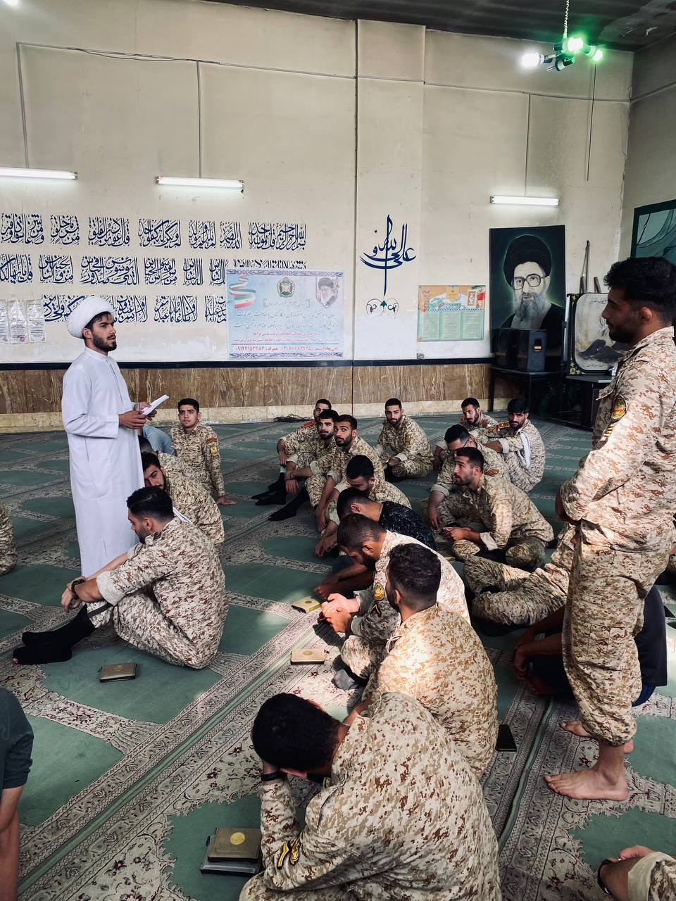

امیرحسین دادگاهی (زاده استان کرمانشاه) ورزشکار رشته کیوکوشین کاراته، مربی رسمی فدراسیون و دانشآموخته حوزه علمیه و رشته حقوق است. وی قهرمان ۲۵ دوره مسابقات کشوری و استانی بوده و ۱۸ سال سابقه فعالیت حرفهای در هنرهای رزمی دارد. او در حال حاضر به عنوان یکی از مربیان برجسته کاراته آزاد در شمال کشور شناخته میشود.
بیوگرافی
امیرحسین دادگاهی متولد شهرستان کنگاور در استان کرمانشاه و بزرگشده شهر ساوه است. او فعالیت ورزشی خود را از سال ۱۳۸۷ در رشته کیوکوشین کاراته آغاز کرد. انضباط شخصی و پشتکار او در تمرینات باعث شد تا در سنین جوانی به عناوین قهرمانی متعددی دست یابد.
تحصیلات و سوابق علمی
وی پس از اتمام تحصیلات مدرسه در ساوه، در سال ۱۳۹۵ برای فراگیری دروس حوزوی وارد حوزه علمیه اراک شد. او تحصیلات عالی خود را در سطح ۳ حوزه علمیه در استان مازندران ادامه داد و همزمان در رشته حقوق دانشگاه شهید بهشتی فارغالتحصیل شد. این ترکیب از دانش حقوقی و معنوی، از او یک شخصیت متمایز در جامعه ورزشی ساخته است.
فعالیتهای ورزشی و افتخارات
دادگاهی با بیش از ۱۸ سال سابقه در هنرهای رزمی، دارنده کمربند مشکی دان ۴ است. او در دوران خدمت سربازی در نیروی زمینی ارتش، مسئولیت آموزش و تربیت بدنی را بر عهده داشت. کسب ۲۵ عنوان قهرمانی در سطوح مختلف استانی و کشوری، بخشی از کارنامه درخشان اوست.
مطبوعات
نگارخانه
← دیدن همه عکسها-

سوابق رزمی -

فعالیت های فرهنگی -

همکاری با نزاجا -
.jpg) برنامه کاپیتان - شبکه سه سیما
برنامه کاپیتان - شبکه سه سیما
پیوند به بیرون
- صفحه رسمی در اینستاگرام
- کانال رسمی در تلگرام
- ارتباط در ایتا و روبیکا